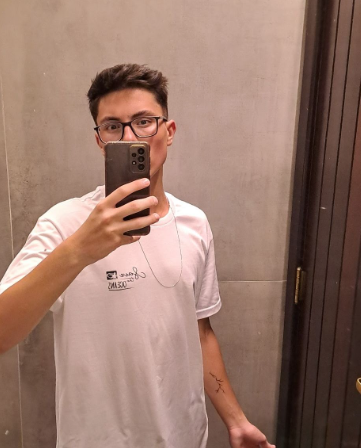

Meu nome é Cauan Henrique Truppel, tenho 17 anos e sou natural de Joinville, Santa Catarina, uma cidade encantadora do sul do Brasil.
Gosto muito de jogar videogames. Além disso, curto sair com meus amigos, buscando sempre momentos de descontração e diversão..
Dedico uma parte do meu tempo ao treinamento na arte marcial bujutsu, especificamente no contexto do MMA (Mixed Martial Arts). Essa prática não apenas aprimora minha habilidade física, mas também promove disciplina e autocontrole.
Amo viajar, principalmente ir a praia, onde posso passar um tempo com a minha família e surfar.